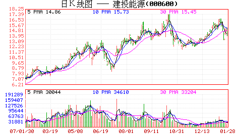
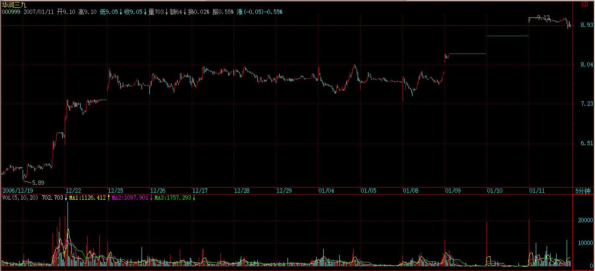
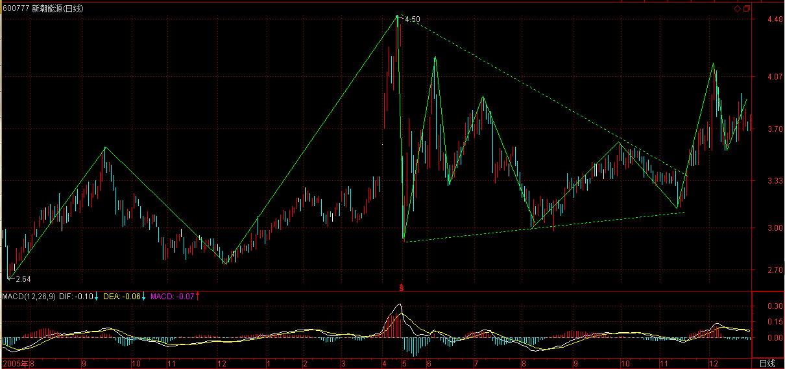
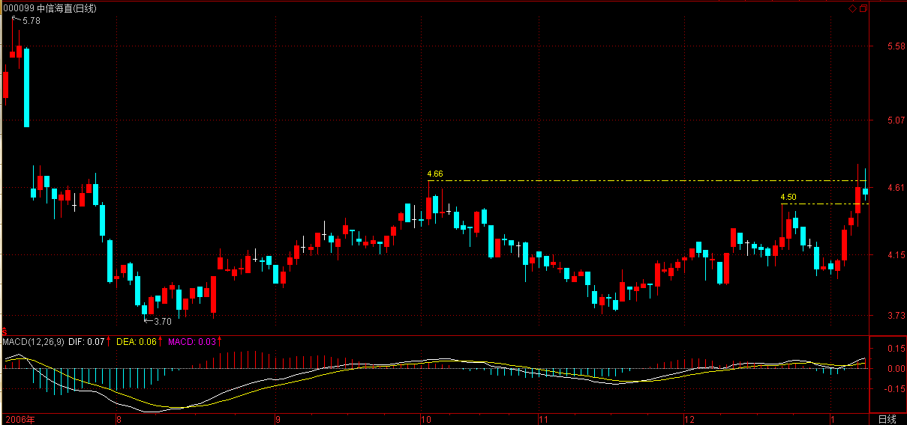
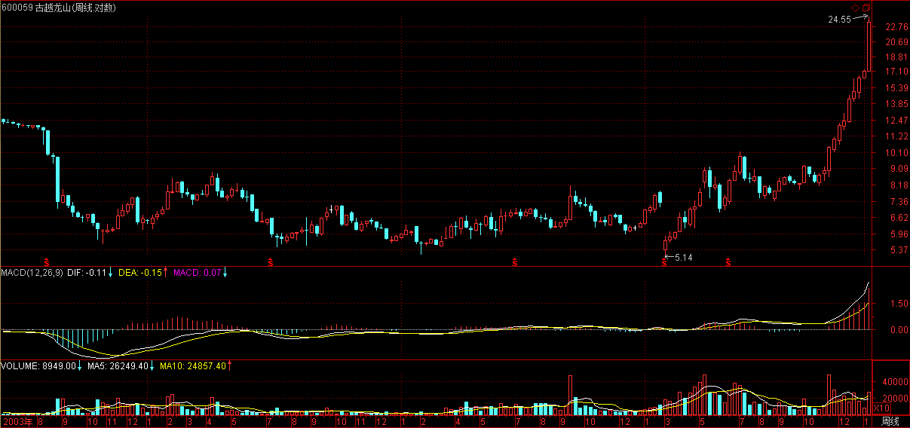
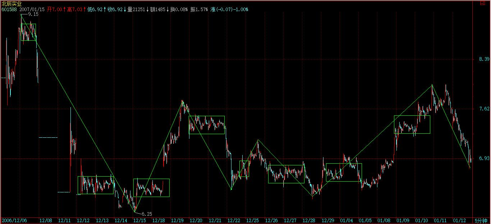

(2007-01-11 15:10:32)

【韶山映山红】原文配图是000600建投能源日线图。新浪博客自动更新为当下的新图。这里贴上当时的日K线图。】
今天说点不算闲话的闲话。
说了这么多买点，对于小资金来说，出现跟着买就可以了，但对于大资金来说，具体的情况要复杂点，因为一个大资金要进去，又不想变庄家，这是需要很高技巧的。
下面是本ID发的一个梦，各位就权当梦话听，如果现实中有任何对应物，那纯属巧合，本ID不背负任何的法律责任。
12月20日，突然天下掉下够8亿农民一人一口的大米，然后就玩了这样一个游戏，把这八亿大米装到5个叫庄家的某类面首的肚子里：撑活他。【韶山映山红】不是撑死，是撑活。阻击，不是狙击。谋财不害命。】
首先，不能把8亿都一起塞进去，留了1亿机动，就是哪个庄家不听话，想折腾，就要出手教训他。【韶山映山红】洗盘，就抢他的筹码。震荡，就来回做短差。】这部分的大米是不能固定在任何一个庄家肚子里，要每天在5个庄家肚子里流动，有时候会变成1.5亿，有时候可能变成5千万，这都根据盘面的情况来的。【韶山映山红】要每天流动。缠师这样的大资金，依然保持每天辛勤的劳作。】当然，这都是后话，前提是另外那7亿已经塞到5个庄家的肚子里。【韶山映山红】1亿机动部队，貌似以5千万为单位，可以砸进去1个单位做多的打短差，也可以1个单位做空的打短差。】
【韶山映山红】8亿资金，5只票。2006-12-20当日各票的流通股本、流通市值如下：
000999三九医药，流通股本约2.6亿股，流通市值约17.3亿元。
000600建投能源。流通股本约1.2亿股，流通市值约10.8亿元。
000777中核科技。流通股本约0.89亿股，流通市值约7.86亿元。
600777新潮实业。流通股本约3.1亿股，流通市值约11.8亿元。
000778新兴铸管。流通股本约6.0亿股，流通市值约31.4亿元。
5个股票合计79.2亿流通市值，也就是说，大约是流通市值的10%进去折腾，不做庄。
8亿是16单，14单常驻，2单机动。每个票最少2单，以便半仓操作。
流动资金大约够一只股票的仓位加倍，大约半仓做轮动。】
现在，面首都爱用药，所以要治面首，当然首先要拥有药。【韶山映山红】000999三九医药，2010.02.24变更为华润三九。2006-12-20的流通股本约2.6亿股，流通市值约17.3亿元。】
这药，刚好是一个典型的第三类买点，【韶山映山红】日线笔中枢级别的三买。】
而月线上一个典型的圆底呼之欲出，
看着圆底上那高高的山崖在上面，
耳边一些精确的风声精确地晃动，那还有什么可怕的，干死算了。【韶山映山红】全流通股改＋重组。2006-09-01停牌，2006-10-09三九医药变更为S三九，2006-12-13复牌。重组几经波折，2007年3月国资委确定由华润集团重组三九医药。】
先把他干到圆底的边缘再说。【韶山映山红】圆弧底的上沿。】
然后就大干起来，体液横飞。把里面那家伙搞得很冲动，不断有东西喷涌出来，本ID就用一个大痰盂接着，【韶山映山红】拉涨停吸筹。】
【韶山映山红】2006-12-20。涨停不封住，多次打开，尾盘尤其打开。】
【韶山映山红】21日不知道为什么停牌没有K线。2006-12-22，低开，拉涨停，敞开吸筹，再封，再多次打开，这一回尾盘封上了。】
两天后，那家伙怕起来了，有点精尽人亡的感觉，
但周围那些叫基金的物体，闻到体液的味道，都忒兴奋，蜂拥而至，上下不断摩擦，然后又坚挺起来，【韶山映山红】基金介入，算是换主力了？★以后研究。】

一挺就挺到月线圆底的边缘，好性感的圆底呀。
第二个，五个手指夹着一个异物，【韶山映山红】000600建投能源。2006-12-20的流通股本约1.19亿股，流通市值约10.7亿元。】
这么委琐的代码，真是活该被人面首了。还贱着说自己能，耳边的风声吹过来：“我们不光要部分被面首，还要整体上来被大家面首”，这么犯贱的物体，【韶山映山红】股东增持，非公开增发A股。股权分置改革。】
还要晃动着第三类买点，那不是天生就想挨揍吗？所以他就被揍了。
第一天，轻轻碰了一下，没什么体液，
这庄家够抠门的，性冷淡？
第二天，轻轻突破一下，体液多了点，
其后两天，盘中上窜下跳的，但就是体液不多，碰到一个更年期的主。
一般这种主，不能硬搞，闪一个身，让他摆摆庄家的威风，一根吸管，顺着慢慢往下边走边吸。
跌破某整数位后，那家伙也被吸的没了力，下不去了，
本ID突然晃动明晃晃的大刀，一副抢筹状。吓得这抠门的家伙飞一样就起来了，对付这种抠门的家伙，更年期的家伙，就要这样，以吸为主，偶尔恐吓。
这种抠门的家伙，一般都自以为自己的题材很牛，怕自己损失了什么低价筹码，一恐吓就飞得比鸭子还快。
对这种人，就要天天弄他的短差，砸得狠就顶死他，拉得狠就先躲在傍边，瞧好机会就突然袭击他，让他难受。对这种庄家，要像蚊子一样不断地出击，更要像赶鸭子一样往上赶。【韶山映山红】刺激庄家拉抬。】
第三个，和第一个的代码模式是一样的，【韶山映山红】000777中核科技。2006-12-20的流通股本约0.89亿股，流通市值约7.86亿元。】
这个面首比较秀气，典型的江浙派，一看就不喜欢。只是有人不断向本ID灌输他要整体变成面首、又有这个题材那个题材，就像去某种店里那些坐台的，一定要本ID消费他，本ID想起N年前曾消费过他，突然心里一动，有了一种怀旧的感觉，试一下N年后，这味道是否依然从前。因此，就在一个小级别的第三类买点开始下手了。
这有点像419，明知道这只能是419的，但要的就是那种激情，那种不循规蹈矩的风情。第一天，没动手，对一个江浙派，太粗暴是不好的，先用目光杀死他。
第二天，为了表示对他的旧情依旧，把他的代码当成买单输进去，买单扫过N个价位，砰地一声，成交上出现了他的代码。【韶山映山红】8.68到8.72就是“扫过N个价位”，缠师的N都比较小。】
那江浙派被惊动了，窜动两下，开始在上面放单，本ID又轻轻扫了他几下。突然，本ID在下面放上一个9999的买单，对他这类轻盈的体形，9999已经足够耀目了。【韶山映山红】当日成交总量31074手，9999手确实足够耀目。】江浙派定了一定，正想反应，突然那买单又没了。惊鸿一现，已经在江浙派软软的身上留下了粉红的印记：这面首是本ID的了。一种被轻薄的感觉在江浙派身上晃动，他开始发骚，开始往下扭动身体。本ID顺着着这身体的轨迹轻扫着，还真有点体液。
第二天，江浙派没有从被轻薄的愤怒中清醒过来，继续往下扭动身体，本ID的扫动越来越快，江浙派大概突然发现，这样继续下去，他就有被吸干的危险，尾市几笔就拉起来，
从第三天开始，在不断的摩擦中，面首开始挺立，江浙派也就是江浙派，就是没什么牛劲，每天尾市的游戏继续。
突然有一天，他也玩起打压恐吓的游戏。一个江浙派，水一样的男子，一副恐吓状，真是太滑稽了。
前两天，本ID就看热闹，不管他，
第三天突然发狠，严重警告他，在乱恐吓就把他给杀了。
江浙派果然是胆小之人，一碰到比他还凶恶的人，也只好温柔起来。
水一样的男子，一温柔就要挺立，真是恶心死了。对这种男子，不能整天像蚊子一样咬，一定要在适当的时候突然狠狠一下，他就会惊吓得往相应方向惯性下去，一般来说，这种面首都是反应有点迟钝的，注定这种面首画出来的面相，总是反反复复，缠绵不断。
第四的，和江浙派的代码几乎一样，唯一不同就是一个在深圳、一个在上海。【韶山映山红】600777新潮实业。2016-07-06变更为新潮能源。2006-12-20的流通股本约3.1亿股，流通市值约11.8亿元。】

一个上海的山东男子是否沾染了上海女男人的气味，在第一天试盘时，就不再成为本ID的一个疑问。
对于面首，解决疑问的最好办法就是干，真理是干出来的。第一天的体液就不少，浮码很多，
10几个交易日前那两根大量暗示着，这男子即使不是处男，也是面首没多久的。这样最好了，浮码多，水就混，藏点大米还不简单？
这大米藏得又快又多，这种打乱仗的感觉真不错，就像一场NP游戏，谁怕谁呀。
一般来说，对于大资金来说，打乱仗是最好玩的，记得N年前，那次，把一个面首从7元多一下干了N倍，中途就在20多换了一口气，4家人，一直打乱仗，其他人在周围进进出出晃悠着，好玩透了，还是NP好呀。【韶山映山红】没扒出这只票是谁。缠师多次提到。以后研究。】
最后一个，虽然就和江浙派差一个尾数，但性格怎么差那么远，典型的山里男子，老实巴交的，没有激情，但很稳健，像个仆人，随便就把大米藏好了。【韶山映山红】000778新兴铸管。2006-12-20的流通股本约6.0亿股，流通市值约31.4亿元。是缠师这次操作的盘子最大股票。】
为什么消费他？不为什么，仅仅是因为他和江浙派尾数差一个，而山东人是前面差一个，好记。而且周线图上的中枢强烈地勾引着走势往上，【韶山映山红】山里男子000778，江浙派000777，山东人600777。】
这种老实巴交的，就算没有什么大惊喜，只要让人放心就好。一般在一个组合里，一定要放一个这样老实巴交的面首，万一其他股票出现什么特殊的情况，马上变现这个去增援是能随时办到的，这样就一定不会出大乱子了。【韶山映山红】不是留一部分现金做后盾，而是选择相对盘子大、走势平稳的品种做蓄水池。现在的指数ETF基金也可以满足这个需求，容易变现，还能获得与大盘走势一致的收益。】
市场里，安全是第一的。而对于资金的总体安全来说，一定的快速变现能力是最重要的。【韶山映山红】快速变现能力的一个衡量指标就是交易频繁、体量大，能尽快的成交。】
本ID这里梦话连篇，当然是有风险的，最直接的，就是里面的人看到了，气不过，狂洗盘，这，本ID还真不怕。正因为不怕，所以就继续梦话连篇，各位最好就当谎话连篇，千万别当真。关于大资金不想当庄家，又想资金利用率高，当然有很多的方法，这只是其中的一种。【韶山映山红】这里说的方法就是阻击。不做庄、启动时抢入。】
一般来说，这种阻击，在一个低位的大级别 第三类买点进行是比较安全的，【韶山映山红】阻击，不做庄，安全第一，就不去赌一买的转折建仓，不参与二买的筑底加仓。所以，底部中枢的三买搭车就是首选了。】首先，第一类买点不适合，你先进去，大家都看着你，找机会吃你，你还找哪里潜伏下来？【韶山映山红】大资金在一买介入，容易留下痕迹，就可能招来别的大资金打压，甚至小级别延伸破坏大级别背驰。】第二类买点是可以的，但一般都采取比较温柔的办法，慢慢来。【韶山映山红】大资金在底部中枢震荡过程中的二买介入，不去明显影响股价，就像游资短线客，不容易被发现。】第三类买点介入，有点硬来的感觉，这要求有一定的功力，否则给吃了都不知道怎么死的。【韶山映山红】三买一般就是启动的时刻了，大资金的介入，就会成为庄家操盘的隐患，要面对庄家的清洗，所以要求有一定的功力，可能要面临三买转二卖的中枢扩张，甚至本级别的盘整转折。大资金也是二买最好，注意温柔。一买要有慧眼，三买要孔武有力。】
但这样的安全性在于，第一，时间利用率高，【韶山映山红】三买介入，比一买、二买的介入，时间利用率高。】第三类买点等于箭在弦上了，你这样突然进去横插一刀，除非是实力特别强，而且所用资金又没有什么期限，所弄的题材也没到迫在眉睫的地步，这样，他会留下来和你折腾。从而变成持久战。【韶山映山红】宋 李焘《续资治通鉴长编·太祖开宝八年》：“上怒，因按剑谓铉曰：‘不须多言，江南亦有何罪，但天下一家，卧榻之侧，岂容他人鼾睡乎！’铉皇恐而退。】高手就是高在一定要对盘中庄家的脾性有充分的感觉，对症下药，而且对阻击的目标有充分的了解，这样就能避免陷入持久战，互相在那里干耗着。【韶山映山红】庄家的脾性。阻击的目标。归纳入股性的分析。可以做个专题，以后研究。】
当然，干耗其实也不怕，就是不断弄短差，把成本降下来，熬都熬死对方。这样的前提是资金必须绝对自由、没有期限。一笔自有的，没有利息压力的资金，是阻击的一个最安全的保障。【韶山映山红】缺点就是，熬死庄家了，还有人接庄吗？如果没有，自己也白忙乎了。趋势背驰演化成最后一个中枢扩展，然后继续下跌，或者趋势背驰+更大级别盘整，然后继续下跌，就是熬死了庄家，或者熬过了时机导致散伙。】
阻击一定要控制好量，最失败的阻击就是阻击成了庄家。【韶山映山红】抢筹不要太卖力，不要把阻击变成狙击。缠师这一课的实例，大约占流通股本的10%。】
为什么要在低位的第三类买点出手，这个位置，庄家已经货不少了，而成本还在附近，如果大力打压，你有实力在低位顶住，除非那面首钱出问题了，否则不可能亏钱把所有货倒给你，如果真是这样，就成全他算了。【韶山映山红】低位大级别的三买，就是筑底中枢的三买，筑底就是庄家建仓的过程，所以这个三买离庄家的成本不远。】
对于第三类买点的阻击，资金实力是很重要的，关键就是要顶住突然变向的打压，所以也要求一定只能在低位，不能与庄家的成本相差太远。【韶山映山红】阻击优选低位大级别三买。 首先时间利用率高，三买等于箭在弦上了。 其次低位三买这个位置，庄家已经货不少了，而成本还在附近，既不好放弃，也不方便深度清洗。 对于三买的阻击，资金实力是很重要的，一笔自有的没有利息压力的资金是阻击的安全保障。】
具体的操作还有很多特别重要的细节，以后再说了。
大盘继续个股补涨指数调整，
目前情况下，只要指数不有效跌破2600点，个股补涨继续火暴。还是低价股。【韶山映山红】次级别跌破，回抽不返回，视为有效跌破。这时候的形态，有效跌破就意味着中枢先出三卖，视为转折的标志。】
2007-1-11 15:18
本ID要去西边谈一个什么电视剧的破事，该电视剧的第一部刚在CCTV1播了，现在是第二部。本ID是一点兴趣都没有，但朋友求到，只能去听听。【韶山映山红】2006年下半年在CCTV1播出第一部，应该反响很好，所以紧接着又要筹拍第二部，是哪个电视剧？《乔家大院》是2006年初在CCTV1播出的，不太吻合。】
本ID最厌恶的就是搞实业的人说投多少能挣多少的废话。估计今晚又要听一堆。【韶山映山红】投多少，能挣多少，是一种确定性的分析和预测，搞实业的人都这样。缠师认为是废话，那么，怎么描述才不是废话？★可以做个专题，以后研究。】
有问题先放下，晚上上来。但有可能晚点。
2007-1-11 15:35
[匿名] 新年好 2007-01-11 18:44:06
缠姐，去年没跟着你混，真是惨死了。今年一定要跟着你。我现在不管买点了，跟你进到山东了。虽说这是你一直不提倡的，可买点都过了，也管不了那么多了。
=========
要自己立起来。靠别人是坏毛病。【韶山映山红】要自己立起来。靠别人是坏毛病。】
2007-1-11 21:22
小明 2007-01-11 21:19:52
缠mm我有一个困扰我很久的问题，请你一定也回答我！长久以来我一直在追求上升途中最肥的一段，可是到现在一无所获，甚至还亏损！请你告诉我在技术上能不能找到这样的方法？以600428为例。看着日K线图12.27日以来的大幅上涨，有没有办法逮到它？
【韶山映山红】600428中远航运，2016-12-30变更为中远海特。】
===============
你首先问问自己前面20几节的课学了没有？学过还问这种问题？
【韶山映山红】600428中远航运，2016-12-30变更为中远海特。】2005-12-09股权分置方案实施。】
【韶山映山红】周线笔中枢高级别的盘整回踩，5.68是一买，然后笔级别回踩形成二买。】

【韶山映山红】周线一买后的日线。日线笔中枢延伸升级的盘整回踩，确认周线二买。】
2007-1-11 21:30
[匿名] 面首甲 2007-01-11 21:27:55
姐姐，你这样不怕把庄家玩死啊！玩死了谁来做庄啊？
============
庄家就是用来玩死的。市场中每年死去的庄家还少吗？
2007-1-11 21:31
[匿名] 无知 2007-01-11 21:30:00
缠姐，这是昨天你和一个同学的问答：
1、工行日线级别的调整需要30分钟图上3个连续走势（下跌-上涨-下跌），完成一个“缠中说禅中枢”，现在是第二个走势阶段；
-------------
可以这样认为，以后说到趋势中，中枢形态的交替原则，就知道为什么这次的调整如此急促，因为很简单，上次的中枢形态是平台，这以后再说了。
-------------
工行的30分钟的3个连续走势为什么不能从前面的上涨算做是第一段走势呢？中枢的次级别走势应该从哪一段开始算起还是弄不太清楚！！因为整个走势图是连贯的。谢谢了
=========
你对基础的问题还是没搞清楚。首先把基本的概念搞清楚。走势都分解成各级别的三种走势类型的组合，你怎么能把前面走势类型的放到后面来？
如果你确实搞不明白这些有点抽象的概念。那就记住，回调的三个次级别是下、上、下；回升的是上、下、上。【韶山映山红】中枢没有方向，但是，有回升和回调的区别。回调的是下、上、下；回升的是上、下、上。】
这不太严谨，如果你不愿意了解严谨的，这就凑合着用。【韶山映山红】严谨的，中枢并不是固定的组合，有当下的判断，随走势演化不断调整，都是多义性分析。】
2007-1-11 21:37
[匿名] 外科医生 2007-01-11 21:34:20
请问禅妹，怎样在盘面上看出所谓的控盘？
另外，泸天化的庄好慢啊，拉一天，休一天，磨羊工啊。
【韶山映山红】000912泸天化。】
=========
长庄和短庄当然不一定，
长庄在推升前期，基本不会拉什么大阳线，特别是通道式上升那种，一旦突破通道上轨就会出现调整。
短庄是快，基本就是三段，拉一段，歇一下，再拉一段就收工。【韶山映山红】短庄只有一个abc盘整背驰的走势。】
对于大一点的资金来说，都跟短庄是不切实际的，只能小部分资金参与其中，【韶山映山红】大资金跟不了短庄，容量有限，进出都困难。反过来说，短庄本身也不是大资金，更可能是游资的题材短炒。】特别现在越来越集团化运动，以后短庄会越来越少。【韶山映山红】集团化运动是什么？★靠控盘来操作的庄家时代过去了，缠师在后面课文说过多只股票组合操作。】
【韶山映山红】这里回答的是第二个问题，泸天化的庄好慢啊，拉一天，休一天，磨羊工啊。第一个问题，怎样在盘面上看出所谓的控盘？这个问题没有回答。】
2007-1-11 21:42
[匿名] 老小孩 2007-01-11 21:40:18
580004最近一直在升突然来两个黑家伙是转折还是背弛搞不懂.请教老师.以后会怎麽走.
【韶山映山红】580004首创JTB1。】
=============
上涨的背弛都是在上涨中看的，跌了那么多还讨论什么背弛？如果你资金量不大，特别又是权证，根本没必要看太长的图。例如这次，3.5元上在15分钟图上的背弛这么明显，为什么不走？
【韶山映山红】日线图上看没有背驰。还在傻傻的等。资金量不大就不要看太长的图。日线笔级别的走势，一笔又是通道式上涨，日线图就是太长的图，次级别都不一定有反应，15分钟图差不多是次次级别了。】

请记住，最好的当然是卖得准，但如果不能，宁愿早了，千万别晚了。【韶山映山红】宁愿卖早，千万别晚了。】
另外，如果技术不过关，尽量别碰快到期的权证。要消费就消费处男，别消费什么更年男。【韶山映山红】如果技术不过关，尽量别碰快到期的权证。】
【韶山映山红】580004首创JTB1。完整日线图。】
2007-1-11 21:51
[匿名] 在路上 2007-01-11 21:47:55
请问缠姐:
1、第二个股票的中枢ZG是10.16的4.65吗?（日线）
2、第三个江浙的那个好像还在中枢内你就进去了？（日线）
3、第四个12。20之前的突破是回到中枢的，不是说如果触及中枢可能要构成更大级别的中枢，我理解行情可能差一点，像我进的600428触及了，但走的也还行
4、第五个好像也触及了中枢，
请缠姐有空解释一下。
===
就回答你一个，山东人，
【韶山映山红】600777新潮实业。2016-07-06变更为新潮能源。】

本ID进去的位置是一个周线级别中枢的第三类买点。

该周线中枢是一个延伸形态，在图形上是一个标准的三角型，【韶山映山红】上图是周线笔中枢划分。当时缠师的划分要多一些次级别。这个三买是哪个中枢的，分析不出来。】

一般中枢的延伸，如果是收敛形态，都会走成三角形，这以后会说到。【韶山映山红】中枢的形态。可以做个专题。以后研究。】
其他自己去研究。
2007-1-11 22:07
对不起，今晚那破电视剧浪费很多时间，现在太晚了，先下。 再见。
提醒一句，自己学了，自己去找股票，现在低价股满地机会，很多方法都可以排上用场。【韶山映山红】找股票，很多方法都可以派上用场。】
再提醒一句，第三类买点最有效的，就是最底部那个中枢所产生的，因为即使变成较大的中枢，问题也不大。
而在日线上出现第二个以上中枢时，就别用什么第三类买点了。【韶山映山红】日线笔中枢级别的走势不容易形成上涨趋势，形成上涨趋势之后还能继续延伸就更难了。】
那时候完全可以用低级别的第一类买点找到中枢震荡的低点。特别是第二次下探的低点，【韶山映山红】日线笔中枢级别的上涨趋势，如果要参与，就不要等三买，abc盘整背驰就可以介入，形成中枢震荡的次级别低点更好，不用等中枢震荡，还可能是次级别线段类走势离开的一买。】例如上面都说的600428。这种买法在这种情况下更有效。
【韶山映山红】600428中远航运，2016-12-30变更为中远海特。周线笔中枢高级别的盘整回踩，5.68是一买，然后二买。】
【韶山映山红】周线一买后的日线。日线笔中枢延伸升级的盘整回踩，确认周线二买。】

关于买法的选择问题，以后都会说到的。注意这里的逻辑关系，首先买法都是要绝对安全的，在绝对安全的基础上，选择更有效的。【韶山映山红】买卖点，除了严格定义的三类买卖点之外，还有多义性分析得到的三类买卖点，所以就有了买法的选择问题。越接近突破拉升的越有效。★可以做个专题，以后研究。】
2007-1-11 22:13
最后提一个思考题，任何中枢的上面都一定有第三类买点吗？如果没有，请举例子，并解释这意味着什么？【韶山映山红】不一定。任何中枢都一定有三买或者三卖，二选一。没有三买就会有三卖，意味着中枢之后的走势没有延续中枢之前的走势，在中枢盘整震荡的过程中发生了转折。】
下了，再见。
2007-1-11 22:19
注意
现在说这5个家伙只是上课，中线没问题，短线这么明目张胆地叫板，对方肯定有反应的。最主要这5个东西短线都有一定涨幅了，别追高。
自己去找一些低价里的第三类买点的，最后别超过5块的。
本ID过年后新阻击了两只，都是刚突破前期高位的，一个和药的代码在第四个位置差一点，
【韶山映山红】000099中信海直。2007-01-04流通盘2.5亿股，流通市值10.0亿元。】
【韶山映山红】从日线图上看，缠师所谓的“突破前期高位”，是多么的近。相当于周线笔中枢级别的二买在日线图上的定位。】

一个是过年要送礼的。
【韶山映山红】000416健特生物，生产脑白金。2008-01-06变更为华馨实业，2008-12-30变更为民生投资，2014-04-14变更为民生控股。2007-01-04流通盘3.48亿股，流通市值9.3亿元。】
都在突破的位置上折腾着。
那5只涨那么多的，只能回调后才能考虑介入。
2007-1-12 10:08
还有一个是刚进去阻击的，和环保的有关。3元多，
【韶山映山红】000915山大华特。山东，环保。2007-01-11流通盘1.1亿股，流通市值4.0亿元。】
后三只和前面5只不是同一批钱，是从工、中行高位套现的部分。
【韶山映山红】601398工商银行。】
【韶山映山红】601988中国银行。
压指数股票炒补涨是年后的大思路，要延续一点时间。【韶山映山红】压指数股票炒补涨，就是大蓝筹股票的补涨？★板块轮动，风格转换。可以做个专题，以后研究。】
工、中行中线没问题，过点时间，大部队回来又会启动了。
2007-1-12 10:13
[匿名] 赚到了 2007-01-12 11:00:41
缠MM,这5个庄家现在是骑虎难下了,你说他们接下来会怎么办?拉嘛,明显为你抬轿,不甘心啊;不拉嘛,吃了一肚子货,更难受了.
==
所以一大早告诉各位，别瞎买。本ID这么明目张胆的示威，现在网络这么发达，你以为对方看不到？
本ID这样说，就是不怕对方知道。但围观的人现在才买，就怕双方打起架了伤到无辜者。
从这5只股票的走势，就可以看出每个庄家的性格。像江浙派，被这么明显的调戏，反应比较激烈。山东人，由于里面都是刚进去的，就顺着大盘来了。大家都不愿意先出手。至于老实巴交的，更没人管了，跟着大盘走。
药和能源，药是有点默契地结成共同体的味道了，所以比较安静。而能源不同，看到没有，今天上上下下在打仗，本ID就喜欢现场直播。
至于今年才进去闹的三只，都在突破点上，慢慢折腾。本ID有的是时间与耐心。
2007-1-12 11:47
[匿名] 摄影之友 2007-01-12 11:43:11
博主:
在沪的山东人我可是整了快三分之一的了..你这样一说.我怎么忽然没底了......
===
这种N个人在里面的对于散户最好操作的，成交量萎缩下来就可以找短线买点介入，成交量一急剧放大就找位置走人。
因为成交量突然放大，就是至少有一方先出手了，一般这种情况，例如四方，最后都要斗下最多两方。但也有例外的，像N年前本ID搞的一个东北股票，四个人一直从7元都都到40几，都没停下来，后来一窝蜂出来，瀑布一样就下来了。【韶山映山红】没扒出这只票是谁。缠师多次提到。以后研究。】
对于本ID来说，对山东人，考验的是耐心，绝不先出手。因为本ID的资金是自有的，没有利息压力，凭什么让本ID先出手？
2007-1-12 11:56
大盘的日线中枢正在形成中，【韶山映山红】当时的这个中枢还不够笔中枢。】
各位应该记得，本ID在9日曾提出一个思考题，就是工行的当时走的是第几段。今天回头一看，应该对走势必完美的原理有一个很深入的了解。
【韶山映山红】601398工商银行。】
为什么？就因为下来的第一波级别太低，这和北辰的情况是一样的，看看现在北辰的走势，对走势必完美就该有认识了。
【韶山映山红】601588北辰实业。】
工行的走势是否复制北辰的，大家就慢慢看吧。
下了，再见。
2007-1-12 12:02
(2007-01-12 15:12:51)
子曰：古之学者为己；今之学者为人。
杨伯峻：孔子说：古代学者的目的在修养自己的学问道德，现代学者的目的却在装饰自己，给别人看。
钱穆：先生说：古之学者，是为己而学的。今之学者，是为人而学的。
李泽厚：孔子说：古时的学者是为了改进自己，今天的学者是为了教训别人。
详解：
这是众说纷纭的一章，但所有的解释，都本于厚古薄今的路数，将“为己”、“为人”打成两橛，将“为人”贬义化，将“为己”神圣化，不过都是宋明腐儒“扬内圣、贬外王“的伎俩。宋明最终都被外族所灭，绝对不是历史的巧合，而要大大归功于他们这种误人误国的荒唐伎俩。【韶山映山红】“打成两橛”。】
“内圣外王”本是一体，内不圣的外王哪能持久？外不王的内圣顶个屁用！所谓“学”？是“多闻”、“多见”基础上的“对照、校对”，不离“天地人”间的大易流行。“为己”、“为人”，最终都要成就“内圣外王”，岂能将“为己”、“为人”割裂？单纯“为己”与单纯“为人”，同样只能制造“馁、耕、食”的恶性循环。无论标榜“为己”的英美式资本主义，还是标榜“为人”的斯大林式资本主义，都逃不出这个循环。
从语法上看，本章是明显的互文，古文中，为了语言的流畅与对称，这十分常用。这里，无须追究所谓蛋与鸡的关系，无须追究究竟是“为己而为人”还是“为人而为己”，归根结底，都是“内圣外王”、“为己为人”一体。这，无古今之别，离此之学，只能是伪学，不可能是真正的学问。而伪学，又何能称为“学”？
缠中说禅白话直译
子曰：古之学者为己；今之学者为人。
孔子说：无论古今，真正的学问与学人，都不离“内圣外王”、“为己为人”的一体之学。
（待续）
严禁抄袭，违者必究
大盘今天的走势很正常，

前几天不问过各位工行究竟走的是哪一段？根据走势必完美，三个次级别是必须的，所以这几天的走势太正常了。这根本不存在依靠任何人，一个走势必完美的原则就知道了。
个股依然是低价补涨，只要成交量不过于萎缩，个股行情就不断，主要是低价股的。注意，反复说的都是补涨，所谓补涨，就不会是连续的中线行情。前几天已经说过了，补涨完了，还是要看工行等，他们如果不再启动，那么调整的级别就大了。
前面还特别提示要注意政策上的动态，这不会逆转大趋势，但会对调整的力度与时间有影响。最近已经有不少人跳出来对大盘进行言论反压，但相信，这不会成为管理层最终的意见，因为在去年的行情中，管理层是最大的受益者，过快上涨可能不好，大幅下跌也是绝对不被允许的。这就决定了目前的调整格局，轻指数，重个股。只要买点出现，就有个股机会。
中线个股问题不大，看看去年的酒，今天还在涨，就知道了。
2007-1-12 15:26
[匿名] 赚到了 2007-01-12 15:19:01
但也有例外的，像N年前本ID搞的一个东北股票，四个人一直从7元都都到40几，都没停下来，后来一窝蜂出来，瀑布一样就下来了。
---------------------
缠MM为什么要跟他们玩到40几,为什么不30几就都倒给他们,这样应该赚最多啊,等到高位,大家一起杀跌,效果会好吗?
===
该股如果能把筹码都收集到，30元一点都不贵。大家都不愿意把机会让给别人。后来是大盘出现问题，风声不对，然后就鸟兽散去。【韶山映山红】没扒出这只票是谁。缠师多次提到。以后研究。】
2007-1-12 15:30
[匿名] whq999 2007-01-12 15:26:47
缠妹啊,大盘会不会破2600啊,这是俺最怕的问题啊.
===
思维模式错误，不要预测，关键就看其表现。
唯一可以百分百断定的就是走势必完美。所以在第二段的高位就要走人，走了以后再等待买点的出现。
当然，这里说的只是的原则，如果你是周线级别操作的，可以利用这打短差，不存在走的问题。
2007-1-12 15:36
注意
不要到今天还存在思维的误区，不要预测，等买卖点自动出现后自然反应。
2007-1-12 15:37
[匿名] 赚到了 2007-01-12 15:20:31
今天江浙派是气急败坏了吧【韶山映山红】000777中核科技】
===
他没想到本ID比他还狠。所以庄家其实是弱势群体，本ID很同情他们。
在大牛市里，脑子进水的才当庄家。大牛市就是群众运动，关键是把群众煽动起来，这才是大庄家。
2007-1-12 15:45
严重注意
各位，本ID的玩法和各位都不同，所以本ID的个股，最开始只告诉各位药，因为该股的基本面足以支持大行情，所以就算碰到变态的庄家，也无所谓了。
而其他四只，本ID是玩得很开心，其他人就不一定受得了了。所以各位最好别跟本ID的股票，就怕本ID杀庄家的时候，把各位也给伤着了。
当然，你想练胆子，不妨可以关注，看看本ID是怎么现场表演的，有合适的买点，也是可以介入的。但一定不能追高，一定只能在买点上买股票。
2007-1-12 15:51
[匿名] 插班生 2007-01-12 15:51:47
楼主,像我这样是上班族,自己认为短线技术也不好,所以计划等变天后再跑.毕竟我现在的赢利已有一大截,不会一下就跌到我的成本价上.再说出来了也不知道新买的就一定比手上走的好.
===
说过N次了，走人一定别怕走早了，如果你判断不过关，宁愿走早，千万别走晚。有钱还怕发现不了新的机会？
2007-1-12 15:54
[匿名] XL 2007-01-12 15:47:07
请教600059古越龙山周线是不是没有第三类买点？对这种票如何处理？谢谢

=================
日线上有呀，【韶山映山红】600059古越龙山。】
周线上是典型的第二类买点。【韶山映山红】所以说，重点还是一买卖点的判断。三买卖点的模式，不可能套用到所有股票上去。】

2007-1-12 16:02
[匿名] 赚到了 2007-01-12 15:22:41
今天能源上这一仗,缠MM是打压的一方吗?
=============
怎么能光干打压呢？本ID又不是庄家，全打出去不就没得玩了？
本ID是上上下下地短差，他砸就接着，他拉就给他，气死他。如果他狠砸，就比他砸得更快更狠，在目前的位置，拉抬的事情，本ID是不干了，在下面就无所谓，本ID经常吃他的压单，现在不干这种事情了。手法要多变，不能给对方猜到。
但原则是一样的，就是把自己的成本降低，垫高对方成本。所以打仗对于本ID来说，只是降低成本的活动，当然愿意天天干。
2007-1-12 16:13
[匿名] 潜水员 2007-01-12 16:10:27
楼主,如果我以日线操作，是否应以30分钟线来规避短期风险？回补时是否也应在30分线上找相应买点进入？或者可在更次级别买点回补？ 谢谢
==================
可以，但如果在急促变动中，30分钟太慢，可以看1分钟或5分钟的。【韶山映山红】操作级别主要限制买入，卖出可以考虑降低级别，尤其是急促变动中。】
2007-1-12 16:15
[匿名] 学习 2007-01-12 15:30:26
请问缠妹，工商银行的第二段，高点如何判定的。虽然我逃了，可是我根据的是突然放量后出的，没有明显看出背弛。在5分钟图上。是不是我看错了？
==
根据中枢，刚下来不是说了，工行下来形成两个中枢，反弹时，下面一个中枢有着强烈的反拉力，而且，5分钟上有缺口，又是整数位置，至少反弹的第一段就会在这里结束，这是很容易判断的。【韶山映山红】601398工商银行。】
对于小资金来说，走了再说，等待下一个买点。【韶山映山红】小资金可以满仓操作，操作级别的买点进，次级别出，次级别的买点再进，反复操作，直到出现操作级别的卖点。】
2007-1-12 16:20
[匿名] 逻辑一生 2007-01-12 16:20:27
本人自从12月上旬无意看到id主人的文章以来，基本再没有犯过什么错误，不过也不大可能一直有时间盯住盘面，例如从昨天下午2：00到今天2：00我都没有时间看盘，短线就会带来一定损失，但大多数时间我能够兼顾看盘，所以请问，有没有什么好的策略可以减少这种不看盘带来的损失，当然我并不是贪婪的人。
===============
看日线图，级别大点的，就可以忽略盘中的震荡。
2007-1-12 16:21
[匿名] 股市雷锋 2007-01-12 16:10:55
请教缠姐.580003还有没有机会,我拿了3个月了,想等到4元卖的,可是目前看有点想卖了,请缠姐指点一二!
------------------
[匿名] 赚到了 2007-01-12 16:19:56
老兄,来这里的人应该学会只在卖点到了时卖股票,你等卖点过了才问这种问题.个人意见:现在卖,实在不是时机
===============
对，卖点过了，那就随便干什么都可以，反正都不是必须要干的事情了，就听天由命。【韶山映山红】错过了卖点，就装死趴着？也不是这个意思。可以做个专题，以后研究。】
但你愿意一直都这样？为什么不自己把握自己的命运？
把握自己的命运，只在买点买；卖点卖。
2007-1-12 16:24
[匿名] XL 2007-01-12 15:47:07
请教600059周线是不是没有第三类买点？对这种票如何处理？谢谢
－－－－－－－－－－－－－－－
缠中说禅 2007-01-12 16:02:39
日线上有呀，周线上是典型的第二类买点。
－－－－－－－－－－－－－－－
[匿名] 新年好 2007-01-12 16:19:35
我也看不出这个买点啊？
还有缠姐怎么不回答我的问题啊？是不是太多了？精简一下
========================
看不出，就去看看第二类、第三类的定义，必须自己找，本ID可以告诉你对错，但不要光想要现成的答案，这样不是你自己的本事。
1，请问昨天你说的工商银行下来的第一波级别太低，是5分钟线吗？但是30分钟线上不是也形成中枢了吗？
===========
现在已经是日线的。
【韶山映山红】601398工商银行。】

30分钟是后来的形成的，
开始的只是5分钟。
中枢的级别是逐步加大的，这在调整中十分常见。这就是中枢扩张的意思。从一个5分钟的，慢慢扩张成一个日线的，甚至变成周线的。【韶山映山红】这里说的“中枢扩张”，并不是两个中枢震荡区间重叠引发的中枢扩张升级，也不是小级别中枢递归演化成大级别中枢。这时候的级别经常是K线图的周期冒充的，上面日线、30分钟、5分钟三个K线图就可以看出，这个实例，先有5分钟中枢构成5分钟走势，3段5分钟走势类型重叠形成30分钟中枢。从30分钟到日线，就不是递归，而是不同K线图级别的图形了。换句话说，这里并不是递归的日线中枢，而是一个30分钟中枢，在日线图上看符合中枢的情况，就直接被视为日线中枢。】
对于工行来说，如果这次下来后，必然有一个日线级别的盘整或上涨，但再上去如果不能突破该中枢，那肯定还有一波日线级别的盘整或下跌，这样就把该中枢进一步扩展成周线的了。【韶山映山红】这段话证明了上面的推论，这次下来的30分钟中枢，直接被视为日线中枢，当下是一个日线级别的向下调整。所以如果后面日线级别的向上不突破，又有一波日线级别的向下，就成了日线级别的下上下，就扩展成周线中枢了。】
2，还有北辰，30分钟线是说中枢扩张了吗？所以要产生日线上的中枢，但是日线上这个中枢已经形成了啊，现在还是围绕中枢在走，对不对啊，缠姐？

===
这和第二是同类性质的，研究好第二，这个自然知道。【韶山映山红】5分钟走势类型的重叠构成30分钟中枢，并且延伸。30分钟中枢在日线图上直接被视为中枢。】
2007-1-12 16:42
[匿名] 过客 2007-01-12 16:31:35
报到，小姐。我今天伤痕累累阿
===
牛市里受伤，大把复员的机会，关键是要搞明白为什么受伤？是什么坏毛病让你受伤。
2007-1-12 16:45
[匿名] 之乎者 2007-01-12 16:39:58
缠MM：关于中枢还是有些不明白。
盘整中的中枢好明白，有点象N字形。但如果是次级别上涨+盘整+上涨是否就构成本级别上涨中枢？举个极端的例子，比如1分钟级别上：连续3分钟构成的ｋ线分别是5-5.1元、5.1元、5.1-5.2元，那么是否意味着就构成5分钟级别的中枢，该中枢[ZD,ZG]仅是5.1元这个点位？
===
不对，首先，没有什么上涨中枢的概念。上涨有两个中枢，你说什么是上涨中枢？当然，可以说是回调形成的中枢，也可以说回升形成的中枢，但这都只是为了形象，不是精确的概念。【韶山映山红】精确的概念？对原走势力度的反抗得到确认。以后研究。】
你说的例子，只形成一个1分钟中枢的延续。
另外，缠MM在17章“走势终完美”中提到600497驰宏锌锗在2005年7月27日到10月25日期间有2个中枢，不知如何界定这两个中枢，本人怎么看都好像都只有一个中枢，请缠MM明示2个中枢具体划分日期！
===
这个问题本ID不准备回答，为什么？首先请你把中枢的数学公式自己搞清楚，【韶山映山红】中枢区间的数学表达式。】否则，回答了一个具体的，还有其他具体的，不如把抽象的公式搞清楚，所有的问题都解决了。
注意，中枢有三种运动：延续、扩展、新生。要搞清楚。
2007-1-12 16:51
[匿名] 逻辑一生 2007-01-12 16:42:17
我觉得id理论的一个精华就是对股票的走势进行了数学分解，其中湿吻和盘整对于任何走势都是一个承前启后的过程，一直想早机会咨询的就是：由于坐标刻度的关系，一定时间段在不放大也不缩小的图形界面上观察就是例如上下三角形那样连续的盘整走势（5和10均线可以看得分开的很清楚），如果接下来经过一波大幅的上涨或者下跌走势，那麽在接下来的界面至少在视觉上来看，好像已经是多条均线湿吻的意思，
所以可不可以这么理解，湿吻与盘整并没有什么实质性的区分，是否粘合只是一种坐标刻度的关系，而并不是一定要强调均线数值相等
===
均线的湿吻只是中枢运动产生的现象，不是最本质的原因。先把最基础的中枢概念以及其运动方式搞清楚，这才是关键。
另外，一定要反复体会走势必完美的原理，这是最重要的基础。
2007-1-12 16:54
[匿名] 快 2007-01-12 16:51:25
1\ "说过N次了，走人一定别怕走早了，如果你判断不过关，宁愿走早，千万别走晚。有钱还怕发现不了新的机会？"
2\ "任何买点，都应该在回跌的时候介入，而不是追上去。只是回跌的级别不同而已."
可否将上述两条作为----学习中、并不甘寂寞、尝试操作的金律呢？感请数女回复
===
这不是绝对的，例如，有人有自虐倾向，想受伤，当然可以不遵守。
2007-1-12 16:55
[匿名] 小明 2007-01-12 16:40:56
今天酒类的大涨，包括从周线上600059的大阳，是不是表明酒类到头了即使再雄起还有很长一段的不应期？
【韶山映山红】600059古越龙山。】
==
酒的行情还没完，本ID说过那酒的批复都没下来，现在就在等批复。
另，你在文中所说宋明两朝都为外族所灭非偶然。这个问题我也曾经想到过，也觉得是朱熹这个家伙搞的，把儒家学说给搞坏了。让中国人变的太儒雅了，还有点奴性。据说在秦汉咱中华人是很尚武的！现在不能比了。有个著名的军事专家也是咱们国家的战略顾问曾经就呼吁过咱中国人要尚武！不知分析的对不？
===
为什么要将文和武分开？武人就没奴性？那些为主人卖命的武人，和为主子卖字的文人，有什么区别？文和武都不过是表象，而文化的强悍，往往比武力的强悍更有意义。
2007-1-12 17:00
[匿名] 新年好 2007-01-12 16:59:08
缠姐怎么不回答我的问题了？万科日线上是不是已经出现卖点了，就是昨天，股价创新高，但是红柱却没有变长。【韶山映山红】000002万科A。】
===
在小级别上是，但大级别上，如果你要用MACD来辅助判断，那至少需要MACD回抽0轴附近后，再上去产生背驰才是真的。
另外，最精确的判断应该依据趋势间的比较，如果你觉得日线级别上产生背驰，那至少是两个日线级别的趋势可以比较，而连接这两个上涨趋势的，一定是至少周线上的中枢，【韶山映山红】a+A+b，a、b为趋势。】那么，现在000002的图上有吗？
所以，要等日线上的大背驰，还要等。但并不意味着它一定不下跌，因为小级别的背驰，意味着小级别上出现第一类卖点，这个卖点也会发挥压力的。所以对于短线来说，这就是打短差的机会。
2007-1-12 17:06
两只老虎 2007-01-12 17:03:57
神仙姐姐，在您的理论中，我感觉到的是“恰当的时候做正确的事，游刃有余”，而几乎没看到其他人经常讲的“止损”。
今天大盘跌成这样，眼看着股票缩水，我却没有卖的冲动。虽然内心象被割肉。
===
如果你已经能完全熟练地判断各类买卖点，那么就不需要任何特别的“止损”。【韶山映山红】没有止损的前提是“熟练地判断各类买卖点”。】
当然，如果你经常判断错误，“止损”还是需要的，否则把一个大级别的卖点当成买点，那不“止损”会出大问题的。【韶山映山红】不能判断买卖点的止损又如何设置呢？以后研究。】
2007-1-12 17:08
[匿名] 过客 2007-01-12 17:07:29
小姐，照你的分析，我还能喝点酒吗？
===
你应该这样思考：有买点吗？有符合自己操作的级别的买点吗？这才是你受用一生的思维模式。
2007-1-12 17:10
[匿名] 新年好
2007-01-12 17:09:27
哈哈，刚看到缠姐的回答了，谢谢。
看来是缠姐一时没忙过来，我太心急了，这种心态炒股也不行啊，要锻炼心态。
从缠姐这里可是学了很多东西，真是太感谢了。
－－－－－－－－－－－－
刚才又看了一下，缠姐说的600059日线上的第三类买点是20060927吗？周线上的第二类买点是20050204吗？我怎么觉得是第一买点啊，之前在下跌+盘整+下跌，第二次下跌有背驰，不是第一类买点吗？
======
8月是月线上的标准第二类买点，【韶山映山红】600059古越龙山。】
周线上的在6月9日那一周【韶山映山红】可以看出当时的走势划分和笔划分走势的差别。】
【韶山映山红】日线图上看这个周线二买。以及当时的日线三买和笔划分走势的差别。】
2007-1-12 17:21
[匿名] 清 2007-01-12 17:20:56
不好意思。。最近烦心的事较多，比较忙。与“本ID”的教学拉了一大段。暂时还在学中枢的概念。
希望问的问题不会太幼稚，“本ID”说的第三类买卖点的问题，以日线级别来说，是盯紧30分钟线。以600123为例，12月28日看图按照理论究竟算买点还是卖点。太乱了。
【韶山映山红】600123兰花科创。】
=========
那天在日线图上什么点都不是，当然，在小级别的图上，你是可以发现他是一个买点的。

但买点不一定都是日线的。换言之，日线上出现的上涨，并不一定都是因为日线上的买点造成的，其他级别的也可以。但站在日线的级别看，这些上涨都介入的意义。这里的问题还很复杂，后面有很多定理来描述各级别买卖点之间的关系。这里不说了。
另一个个股的问题，象000839，600682这样的个股，如果错过了15分钟或5分钟背驰的卖出信号，其后应该如果操作。
【韶山映山红】000839中信国安。】
【韶山映山红】600682东方电子。】
谢谢。累。希望将做股票变成愉快的事。
=============
第一，想想为什么错过了，下次不能错过。
第二，看自己是希望按什么级别操作，这根据每个人的情况自己定。对第级别的波动，可以用来打短差。
2007-1-12 17:28
两只老虎 2007-01-12 17:25:30
神仙姐姐，您看一看我学习“缠学”后，理论联系实际是否正确啊！
请教，600392是不是日线上是05.5.24——8.15下降，8.15——1.4盘整，1.4——1.11上升。那么1.11应该不是卖点吧！因为MACD没有背驰。对吗？
=============
还要加倍学习，完全还没弄对门道。
请先把中枢概念严重学好。
2007-1-12 17:44
[匿名] 清 2007-01-12 17:44:15
呵呵。再问“本ID＂一句，如果手上的股票30分钟图都出现男上位，那要折腾的日子岂不很长，因为要至少完成1个中枢（请问这个中枢暂时是指30分钟图上吗）。这个时候除了坐以待毙或者安慰自己是做高级别股票的，还有什么补救措施。。累。问问题累。等答
===
思维方式一定要变，股票没有什么可补救的。
唯一正确的，就是养成在符合自己实际情况的级别的买点买、卖点卖的习惯。
好习惯是无须补救的，需要补救的都是坏习惯，坏习惯不改，什么办法都没有。
即使有，也只是用一个更坏的习惯来掩盖问题。
2007-1-12 17:48
各位，先下了。来这里，一定要洗心革面，否则就白来了。
再见。
2007-1-12 17:49
对不起，今天有事要到远郊，音乐会明天回来再补上。先下，再见。
2007-1-13 10:03
(2007-01-14 14:49:43)
关于历史上那些神奇的乐器之王，有着无数的传说。由于没有演奏资料的流传，这些传说也就只能传说了。历史上第一个让所有欧洲人同时疯狂的乐器之王，是小提琴上的帕格尼尼，他是开创了乐器演奏的炫技时代，如果没有他，乐器演奏的境界能否达到目前的水平，确实值得疑问。没有帕格尼尼，大概就没有后来的李斯特了，一个钢琴上的帕格尼尼，而且也把帕格尼尼的很多炫技性的作品改编到钢琴之上。
当然，两人的演奏，已经不可能听到了。但他们所写的音乐还保存至今。站在纯作曲的角度，他们都是很好的作曲家，相比来说，李斯特更为重要，他的作品对后期浪漫主义甚至二十世纪音乐的影响都是深远的。当然，站在最高的音乐水准上，他们的作品都不能算是不朽的，他们开创了更多的乐器演奏的可能，使得很多的技巧与技术可以被利用，但音乐不是技巧与技术，音乐超越这一切。
在帕格尼尼疯癫欧洲的时代，贝多芬、舒伯特都十分寂寞；在李斯特席卷欧洲的时代，勃拉姆斯也沉寂万分。但最终，能站到音乐圣殿之巅的，是贝多芬、舒伯特、勃拉姆斯，而不是帕格尼尼、李斯特。但如今，在这个荒芜的年代，甚至连帕格尼尼、李斯特都不可得了，那么对着他们的作品，也只是仰望的份了。
今天播放的是两人第一次为自己的乐器所写的协奏曲：帕格尼尼D大调第一小提琴协奏曲、李斯特降E大调第一钢琴协奏曲。虽然不是他们最出色的作品，但已经足够让今天的人仰望了。
[匿名] 李 2007-01-14 14:51:14
我机子有问题，听不了，少有的沙发，坐一坐吧。
==
不是你的机子有问题，是网站有点问题，过一阵子就可以了。
2007-1-14 15:06
[匿名] nn 2007-01-14 15:05:37
报个到,问个好,楼主周末愉快,谢啦!
==
好，现在应该可以了，各位请欣赏音乐吧。
请把其他背景音乐关闭了
2007-1-14 15:11
[匿名] 小屁孩 2007-01-14 15:10:46
lz您好,看了您的股票文章,前面可以看明白,但后面缠中说禅走势中枢及第三类买点,不是很明白,lz能不能有时间搞个图讲讲呀?谢谢
===
不是已经说了工行等几个例子了？自己对着图不难理解的。
周末就不要说股票了。
股票最终比的是修养与人格，股票的大师，归根结底是哲学、艺术的大师，在现代社会，不了解资本市场的，根本没有资格在当代社会生存，而光理解资本市场的，也不可能在当代社会有好的生存。
光从技艺上着手，永远只能是匠人，不可能成为真正的高手。
2007-1-14 15:16
各位，古代有所谓的打禅七，在现代社会，能找到7天来打禅七是极其奢侈的事情了。但每周，有一个小时，抛开一切束缚，抛开一切人群，独自一个人，在房间里、在高山上、在河流里、在星空下、在山野的空谷回音中，张开没有眼睛的眼睛、没有耳朵的耳朵、俯视这世界、倾听这世界，这才是真正人的生活，否则不过是机器而已。
这里只欢迎人，这里只让机器重新成为人。
2007-1-14 15:24
[匿名] nn 2007-01-14 15:22:10
古典音乐盲也给楼主提个意见,楼主似乎看不起流行音乐,但今天俺看了梁祝的作者陈刚的访谈节目,他就比较开放,他主张用三只耳朵听音乐,古典,流行及前卫音乐都应该接纳,俺觉得这样更好,楼主觉得梁祝如何?谢回答
===
梁祝，只是一个荒芜的音乐国度中一个喧嚣的躁动。音乐的真谛不是这里，陈刚之流人的境界，连帕格尼尼、李斯特都达不到。
音乐是有位次的，是“不患”而有位次的。虽然有十一月的萧邦，但周杰伦和萧邦是毫无可比性的。音乐不是用来听的，如果说音乐是倾听的，那么需要的是没有耳朵的耳朵。
2007-1-14 15:28
[匿名] LLL 2007-01-14 15:25:54
今天好象没有播放器啊?只有背景音乐的播放器,各位都有吗?
==
你再刷新一下。应该有的。
2007-1-14 15:30
[匿名] 中间体 2007-01-14 15:26:02
缠姐对欧元怎么看, 我感觉欧州人还是很君子的, 我也看好欧元的走势.
===
如果君子是伪君子的通用词，那无所谓怎么去说了。如果说君子是论语所说的君子，那这种表达就太有问题了。
关于欧元，几年前在货币战争那章中已经说了，现在也无须修改。
2007-1-14 15:33
先下了，再见。
2007-1-14 15:38
[匿名] 看聊 2007-01-14 15:37:15
梁祝，只是一个荒芜的音乐国度中一个喧嚣的躁动。
-----------------
我们有二泉映月，有十面埋伏，高山流水性近者会意，如您所说，音乐是不需要耳朵的，自然也就没有流派．
============
临走补充一句，中国的古典音乐是伟大的，中国的民间音乐也是伟大的，但中国在专业音乐创作中，特别在一个音乐为什么服务的年代中，不可能有伟大的作品。
对于中国的专业音乐创作，黄河大合唱就是其顶峰了，除了这个，已经五四一些艺术歌曲，本ID没觉得中国的专业音乐创作有什么特别值得保留的。
这虽然有点偏激，但却是实情。
音乐来自灵魂的突围，而不是政治的喧嚣。在一个没有灵魂的年代，是没有音乐的。
2007-1-14 15:42
不妨再补充一句
如果说政治对音乐的影响，那么在前苏联，这点更严重，但为什么他们有肖斯塔科维奇等人？中国有谁？别和本ID说像戏子一样的谭盾之流。连赵季平都能被吹成大师的年代，你能冀望中国能有什么音乐？
中国要有专业的、值得尊敬的音乐（不说古典的、民间的，那是古人的创造，面对他们，当代人只有羞愧），首先先产生一个肖斯塔科维奇吧！
现在有谁能和肖斯塔科维奇相比？
中国的音乐之路，路漫漫其修远兮。
下了，再见。
2007-1-14 15:54
本课目录
教你炒股票22：将8亿的大米装到5个庄家的肚里。《论语》详解：给所有曲解孔子的人（46）子曰：古之学者为己；今之学者为人。周末音乐会24：乐器之王的第一次